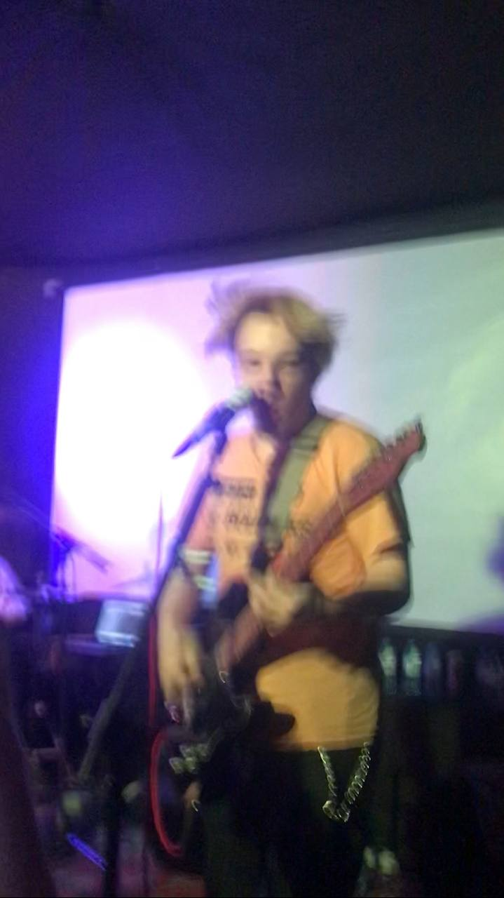

Книга «НАДЛОМ»
Повесть о музыкальной группе и девушке, которые сотрудничают и, как и любой коллектив, ссорятся. Чтобы наладить отношения, они едут в путешествие. ИСТОРИЯ СОЗДАНИЯ При создании истории я вдохновлялась действующей группой «Несогласие». Они играют панк-рок с элементами инди. Все персонажи вымышлены, поэтому воспринимать их как реальных — нельзя. 